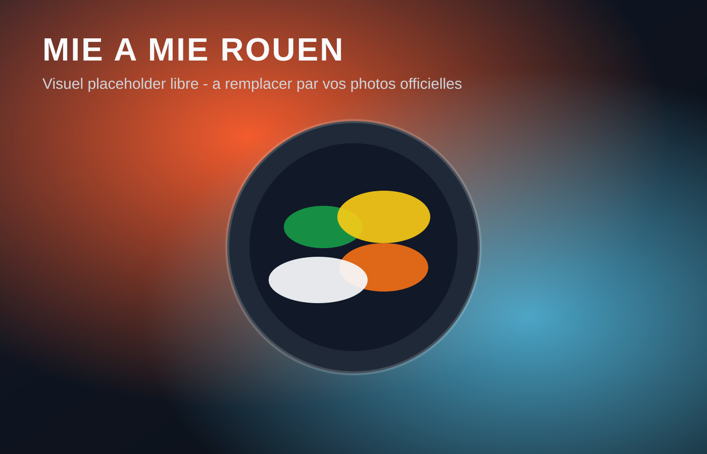

Sur place
Service rapide
Rouen centre | Depuis 2023
Chez Mie a Mie, vous composez votre salade, wrap, panini ou pita avec un large choix d'ingredients. Service sur place, a emporter et livraison.

Sur place
Service rapide
A emporter
Pause dejeuner
Livraison
Uber Eats & Deliveroo
Le concept
Vous choisissez la base, les proteines, les crudites, le fromage, la sauce, le feculent et les toppings pour creer un plat qui vous ressemble.
Wrap, panini, pita ou salade, selon votre faim du jour.
Proteines, crudites, fromages, sauces, feculents et toppings a combiner.
Options L et XL, desserts, boissons et extras selon vos envies.
Apercu menu
Conversion rapide
Disponibilite et prix peuvent varier selon le canal de commande.